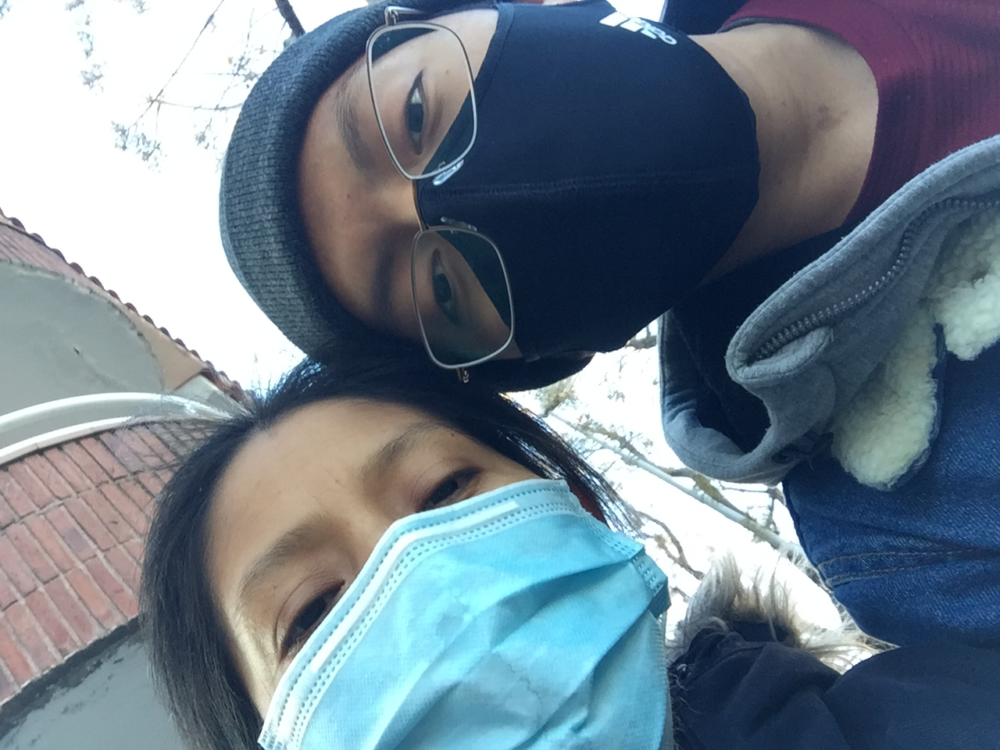

Gracias por Mamá
Mamá, Te quiero mucho. Dios te bendice todos los días. Gracias por tenerme y pedir al Padre por mi
Yo siempre te tengo presente en mis oraciones, rogando sin cesar a Dios el Padre, en el nombre de su Santo Hijo, Jesús, que por su infinita abondad y bgracia te conserve mediante la perseverancia en la fe en su nombre hasta el fin.
Moroni 8:3Att: Alberto Flores